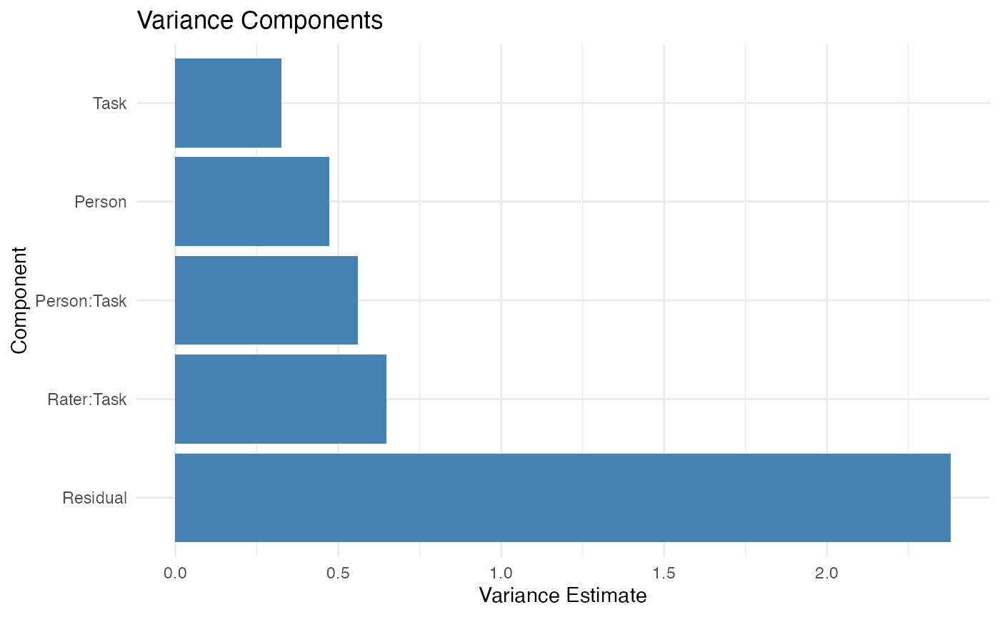

Get Started with facet
George Michaelides
University of East AngliaDuncan J.R. Jackson
King’s College Londonfacet.RmdIntroduction
The facet package provides a unified framework for
Generalizability Theory (G-Theory). In this quick start, we will walk
through a standard analysis: conducting a G-study, and then running a
D-study.
1. Load the Package and Data
First, load facet and one of the built-in datasets,
brennan.
library(facet)
data(brennan)
head(brennan)
#> Task Person Rater Score y
#> 1 1 1 1 5 5
#> 2 1 2 1 9 9
#> 3 1 3 1 3 3
#> 4 1 4 1 7 7
#> 5 1 5 1 9 9
#> 6 1 6 1 3 3Reading the data. The brennan dataset
has one row per observation: 10 persons × 3 tasks × 4 raters per task =
120 rows. Each row records one rater’s score for one person on one task.
This is a nested design: the same four raters do not rate every
task; rather, each task has its own panel of raters (so
Rater:Task is the right way to write the random effect, not
just Rater). The Score column is the observed
rating; the other three columns identify which cell of the design the
row belongs to.
2. Conduct a G-Study
Use the gstudy() function to estimate variance
components. By default, facet uses lme4
(Restricted Maximum Likelihood) under the hood.
g_obj <- gstudy(Score ~ (1 | Person) + (1 | Task) + (1 | Rater:Task) +
(1 | Person:Task),
data = brennan)
# View the variance components
print(g_obj)
#> Generalizability Study (G-Study)
#> ================================
#>
#> Backend: lme4
#> Formula: Score ~ (1 | Person) + (1 | Task) + (1 | Rater:Task) + (1 | Person:Task)
#> Number of observations: 120
#> Multivariate: No
#>
#> Object of measurement: Person
#> Facets: Person, Task, Rater
#>
#> Sample Sizes:
#> # A tibble: 6 × 3
#> effect type n
#> <chr> <chr> <dbl>
#> 1 Person main 10
#> 2 Task main 3
#> 3 Rater:Task interaction 12
#> 4 Person:Task interaction 30
#> 5 Person:Rater (res) residual 120
#> 6 Rater per Task nested 4
#>
#> Nested details:
#> Rater per Task: 3 Tasks, 4.0 Raters per Task
#>
#> Variance Components:
#> # A tibble: 5 × 3
#> component estimate pct
#> <chr> <dbl> <dbl>
#> 1 Person 0.473 10.8
#> 2 Task 0.325 7.42
#> 3 Rater:Task 0.647 14.8
#> 4 Person:Task 0.56 12.8
#> 5 Residual 2.38 54.3Interpreting the variance components. The output
shows four variance components: Person (universe score
variance — true differences between persons), Task
(differences in average difficulty across tasks),
Rater:Task (differences in leniency/severity between raters
within a task), and Person:Task (the interaction — whether
a person performs better on some tasks than others). The “pct” column
shows what fraction of total variance each component accounts for. A
healthy measurement has a large Person component (typically
>30%) and a small Person:Task interaction (the test is
fair across tasks). If a facet is taking up a large fraction of
variance, that is the facet to invest more levels in (more tasks, more
raters) for your next measurement campaign.
3. Visualize Variance Components
Plotting the random effects helps identify which facets contribute the most variance.
plot(g_obj)
Reading the variance plot. Each bar represents a
variance component, and the height shows its magnitude (on the variance
or proportion scale depending on the type argument). The
most useful patterns to look for: (1) a tall Person bar
means your instrument is good at distinguishing individuals; (2) a tall
facet bar (e.g., Task or Rater:Task) means
that facet is a major source of error and you should add more levels of
it; (3) similar heights across components suggest a balanced design
where no single facet dominates. Compare the bar heights to the “pct”
column from step 2 to confirm the relative contributions.
4. Conduct a D-Study
A Decision (D) study calculates the dependability of your measurement design. You can project how changing the sample sizes of your facets impacts reliability.
# Project a design with 3 Tasks and 4 Raters
d_obj <- dstudy(g_obj, n = list(Task = 3, Rater = 4))
print(d_obj)
#> Decision Study (D-Study)
#> ========================
#>
#> Based on G-Study with lme4 backend
#> Object of measurement: Person
#> Universe components: Person
#> Error components for relative error (sigma2_delta): Person:Task, Person:Rater (Residual)
#> Error components for absolute error (sigma2_delta_abs): Task, Rater:Task, Person:Task, Person:Rater (Residual)
#>
#> Sample Sizes:
#> Task: 3
#> Rater: 4
#>
#> Variance Components:
#> # A tibble: 5 × 6
#> component dim var_unscaled pct_unscaled var_scaled pct_scaled
#> <chr> <chr> <dbl> <dbl> <dbl> <dbl>
#> 1 Person Score 0.473 10.8 0.473 33.4
#> 2 Task Score 0.325 7.41 0.108 7.65
#> 3 Rater:Task Score 0.647 14.8 0.054 3.80
#> 4 Person:Task Score 0.56 12.8 0.187 13.2
#> 5 Residual Score 2.38 54.3 0.595 42.0
#>
#> Coefficients:
#> dim uni sigma2_delta sigma2_delta_abs g phi
#> Score 0.473 0.782 0.944 0.377 0.334Interpreting the D-study output. Two coefficients
are reported: G (generalizability coefficient, for
relative decisions like “rank these persons”) and Phi
(dependability coefficient, for absolute decisions like “did this person
meet the standard?”). Conventional thresholds: G ≥ 0.80 for high-stakes
decisions (selection, certification), G ≥ 0.70 for medium-stakes
(formative feedback, progress monitoring), G ≥ 0.60 for low-stakes
research. Phi is always ≤ G; the gap between them tells you how much
absolute-error variance (e.g., task-difficulty shifts) is contributing.
If the projected G is below your target, the next step is to run a sweep
— vary n across multiple values to find the smallest design
that achieves the reliability you need.
Next Steps
For comprehensive documentation, see
vignette("introduction"), which covers:
- Historical foundations of generalizability theory
- All three estimation backends (MOM, REML, Bayesian)
- Univariate and multivariate G-studies and D-studies
- Value Added Ratios and composite score optimization
- Advanced topics, reporting guidelines, and exercises